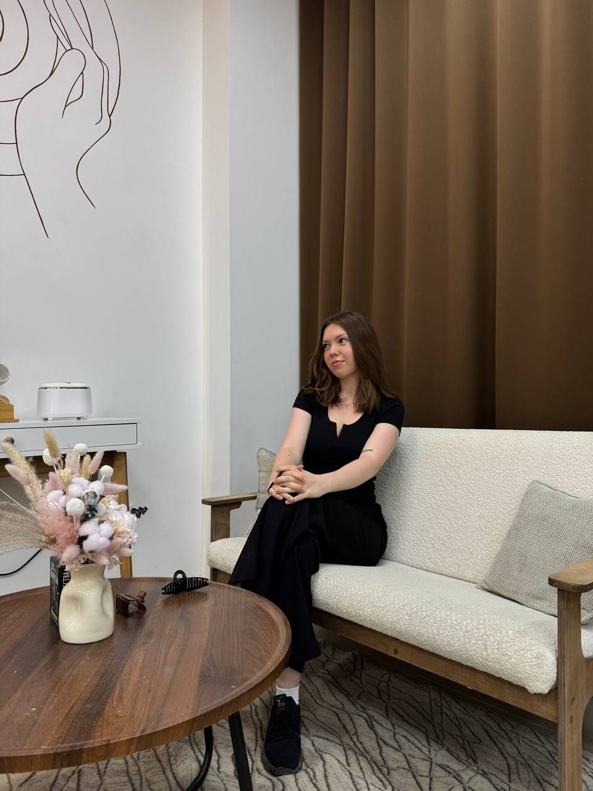
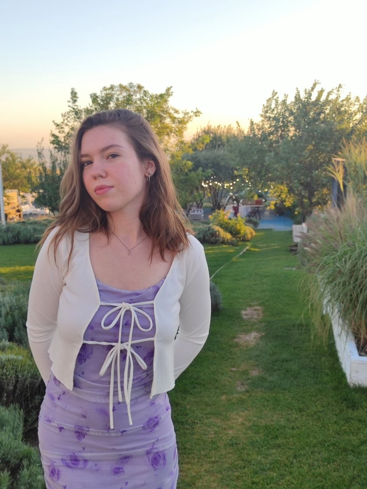
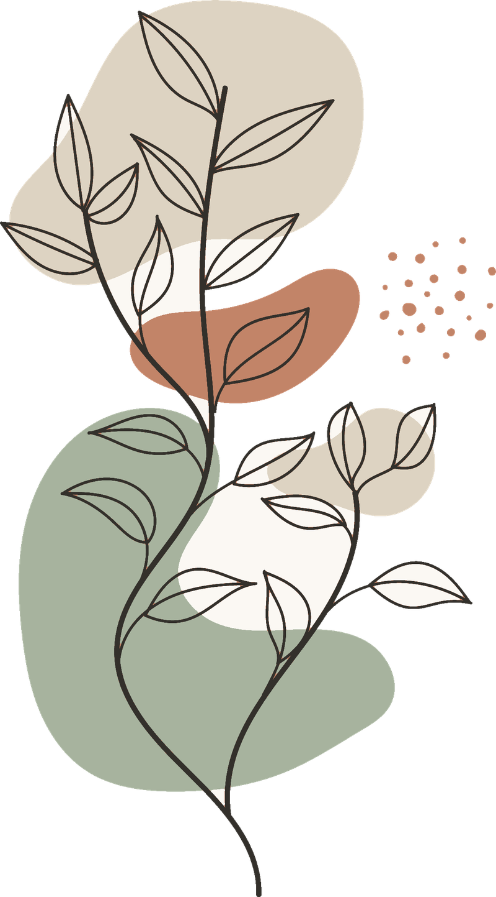

Дарья Северова
(Погольдина)
психолог
Пространство, где можно спокойно исследовать свои чувства, отношения, ценности и смыслы — вместе, без готовых ответов.


Человек за профессией
Кто я
Я Дарья. Мне важно, чтобы в разговоре с психологом можно было быть собой — без оценки и спешки. Я не даю универсальных советов: мне ближе искать вместе, что для вас настоящее.
Вне работы — книги, природа, животные, йога и желание учиться. Иногда — глина и гончарный круг.
Экзистенциальный подход
«Быть человеком — значит быть постоянно открытым запросам жизни, а жить — значит давать ответы на её запросы»
Этот подход о том, как мы выбираем, чего боимся, что ценим и как хотим жить. Здесь нет «правильного» ответа — я помогаю услышать ваш собственный.
Смысл
что для вас важноСвобода и выбор
как вы решаетеОтветственность
за свою жизньОтношения
и одиночествоПодлинность
быть собойКонечность
время и ценностиС чем можно обратиться
Узнаёте себя?
Это лишь примеры формулировок — не диагнозы и не обещания результата.

Можно разобраться, что стоит за напряжением, и найти опоры, которые подходят именно вам.
Исследуем, как вы строите близость, чего хотите и чего боитесь в отношениях.
Смотрим на усталость, ресурсы и на то, что для вас действительно важно.
Присматриваемся к внутреннему голосу и учимся опираться на собственный взгляд.
Бережно исследуем эти чувства и то, откуда они приходят.
Ищем свою позицию во взрослых отношениях с семьёй.
Понимаем, где ваши границы и что мешает их обозначать.
Смотрим, какие требования к себе вы держите и чему они служат.
Вместе ищем ваши ценности, ресурсы и точки опоры.
Учимся замечать, называть и проживать свои чувства.
Исследуем желания, ценности и собственные ответы.
Как проходит работа
Пять спокойных шагов
- 01Вы пишете мне
- 02Знакомимся и обсуждаем запрос
- 03Вместе выбираем формат и время
- 04Проводим консультации
- 05Исследуем происходящее и ищем ваши ответы
Стоимость
Формат и цены
Индивидуальная терапия, ориентировочно раз в неделю. Конкретные дата и время согласовываются после вашего обращения.
Образование и документы
Обучение
Контакты
Напишите мне
Онлайн и очно в Ставрополе. Я отвечу, и мы вместе выберем формат и время.